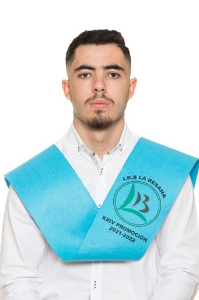
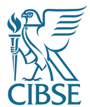

Desarrollo de App’s Móviles (2023)
Universidad Complutense de Madrid
Skills: desarrollo móvil, publicación y deploy.

Estudiante de Ingeniería Informática — Universidad de Castilla-La Mancha
Soy Santiago, estudiante del Grado en Ingeniería Informática en la Universidad de Castilla-La Mancha (UCLM). Me considero una persona responsable, comprometida y con facilidad para el trabajo en equipo. Tengo capacidad de aprendizaje rápido, adaptabilidad y actitud proactiva orientada a la consecución de resultados.
Poseo conocimientos avanzados en herramientas ofimáticas (Microsoft Office) y formación complementaria en desarrollo móvil, ciberseguridad, digitalización y bases de datos.
2022 — 2025 (en curso)
Estudiante del Grado en Ingeniería Informática. Formación orientada a desarrollo de software, bases de datos y sistemas.
2020 — 2022
Haz clic en un curso para verlo. Se abrirá en la misma pestaña; también puedes descargarlo.
Universidad Complutense de Madrid
Skills: desarrollo móvil, publicación y deploy.
INCIBE — Instituto Nacional de Ciberseguridad
Skills: búsqueda de ciberamenazas, ciberdefensa.

Skills: digitalización, redes sociales, marketing digital, YouTube Analytics.

Udemy
Skills: modelado y diseño de BD, SQL, PL/SQL, administración.

CIBSE
Skills: IA en ciclos ágiles, sostenibilidad en software, ML pipelines.
Udemy
Skills: modelado predictivo, limpieza y preparación de datos con Pandas.
Universidad de Castilla-La Mancha
Asesorando labores administrativas, docentes y sociales.
CIBSE / Alarcos / UCLM
Skills: sostenibilidad en software, buenas prácticas en ingeniería de software sostenible.
CIBSE / Alarcos / UCLM
Skills: ingeniería de software aplicada a sistemas de Machine Learning, pipelines, testing y despliegue.
Portfolio personal desarrollado en HTML, CSS y JavaScript. Incluye secciones de formación, habilidades y proyectos.
Tecnologías: Java, Maven
Ver proyectoProyecto colaborativo con varias ramas que incluyen funcionalidades para gestión remota de datos y operaciones.
Tecnologías: Java, Angular, SQL, Kafka
Ver proyectoBreve descripción del tercer proyecto.
Tecnologías: Python, C++
Ver proyecto